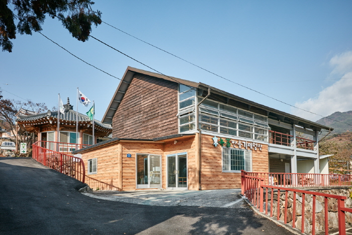
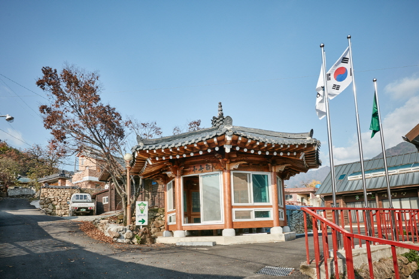
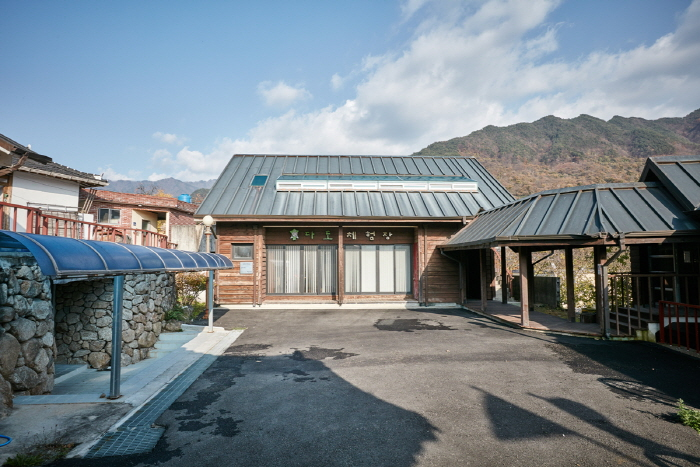
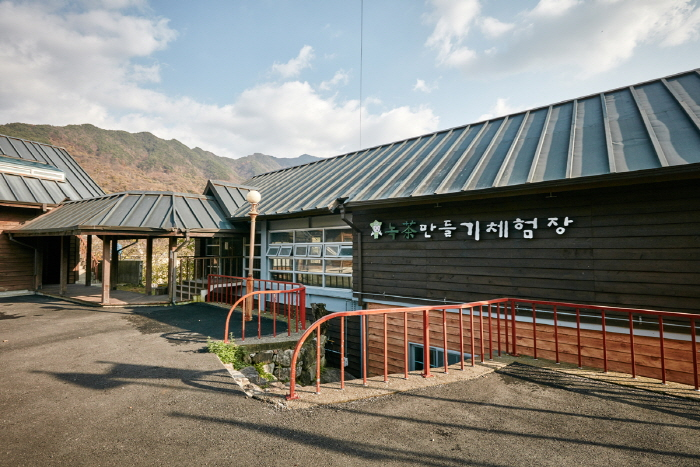

하동 삼신녹차마을
   
지역 : 경남 하동
설명 : 녹차 따기와 다양한 음식 만들기 체험이 가능한 마을.
웹사이트 링크 1:
http://samsin.invil.org/index.html
웹사이트 링크 2:
https://place.map.kakao.com/8648392
웹사이트 링크 3:
https://goo.gl/maps/HD2Pe9twuWqUBbbx7